5.3.5
13 December 2023
MtoA 5.3.5 introduces Arnold 7.2.5.0. See also the MtoA 5.3.0 release notes.
Installation
Download Arnold for Maya from your Autodesk Account. See Download Arnold for more information about downloading MtoA from your Autodesk Account.
Follow these installation instructions.
Enhancements
- GPU renderer overhaul: A large part of the GPU renderer was rewritten using NVIDIA OptiX 8. This allowed numerous improvements such as much faster startup times, lower GPU memory usage, better scaling on multiple GPUs, and faster renders overall. (ARNOLD-9882)
 |
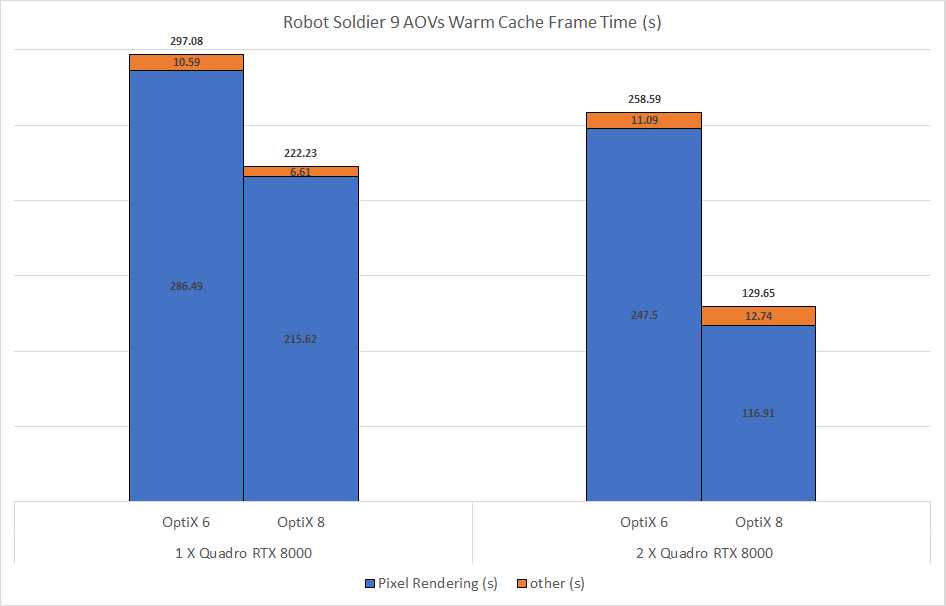 |
| 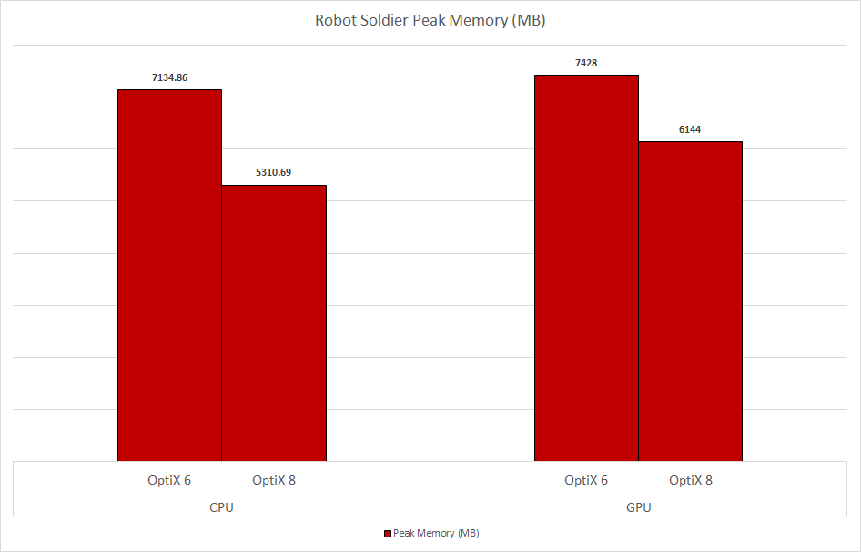 | |
| 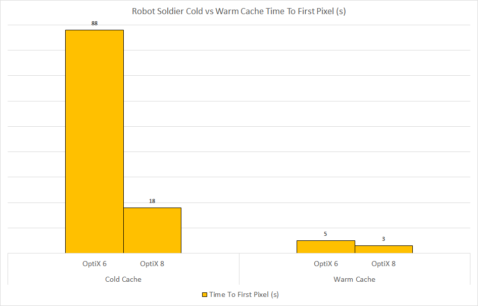 |
 |
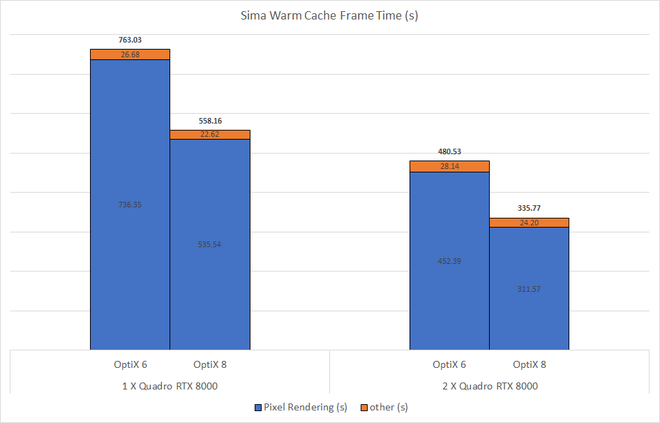 |
| 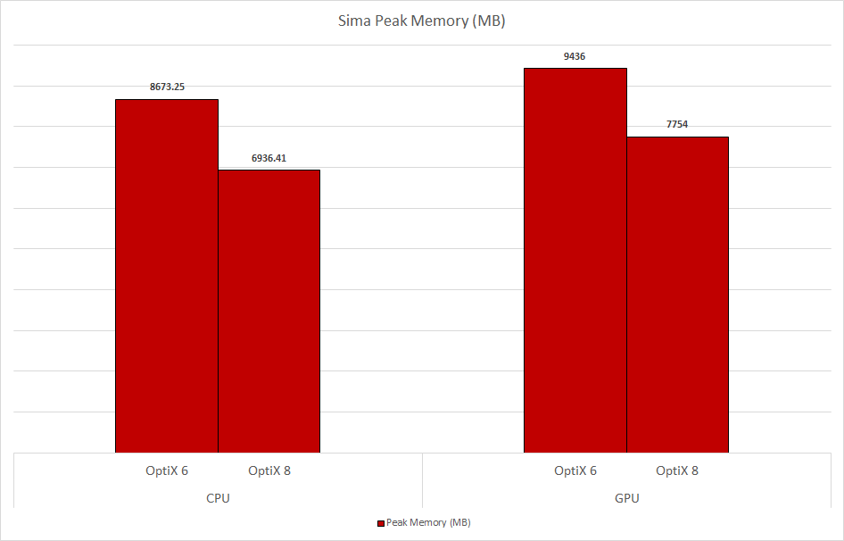 | |
| 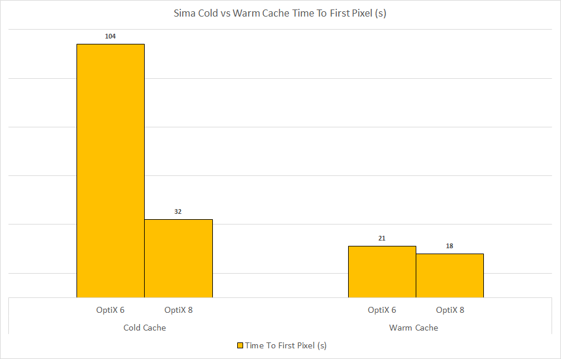 |
- Global light sampling in volumes: Global light sampling is now supported in volumes. The render time speedup when using global light sampling in volumes depend on the number of lights, but even scenes with only a few lights are faster to render. (ARNOLD-13095)
Below is an equal time render comparison of a scene containing 351 motion blurred mesh lights inside an atmosphere_volume.
| 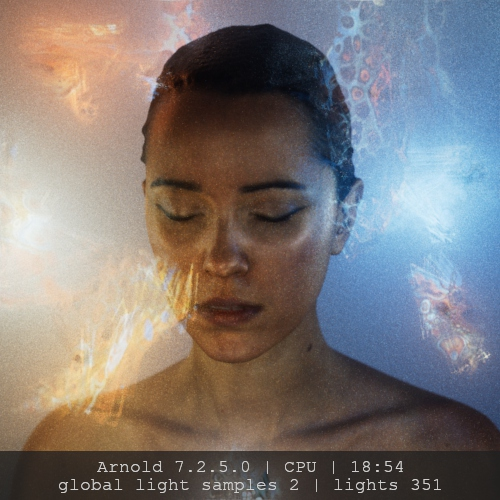 | 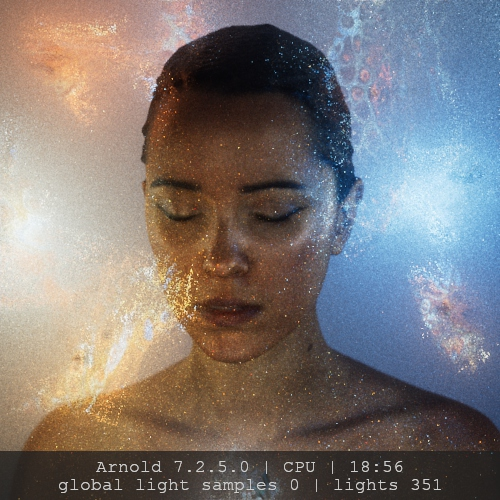 |
| With GLS | Without GLS |
- Improved thick curves intersector: Curves in thick mode are on average 10% faster (in some cases, more than 100% faster) and they look better in closeups. (ARNOLD-2875, ARNOLD-8549 and ARNOLD-14391)
| 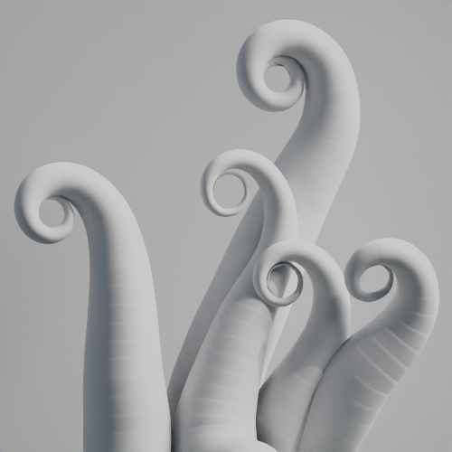 | 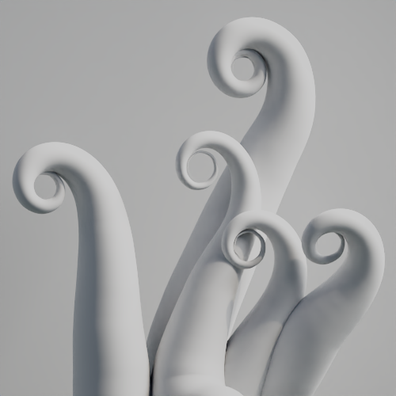 |
| 7.2.4 | 7.2.5 |
- Distance shader in reflections: The distance shader now properly handles secondary paths such as reflections. (ARNOLD-13883)
| 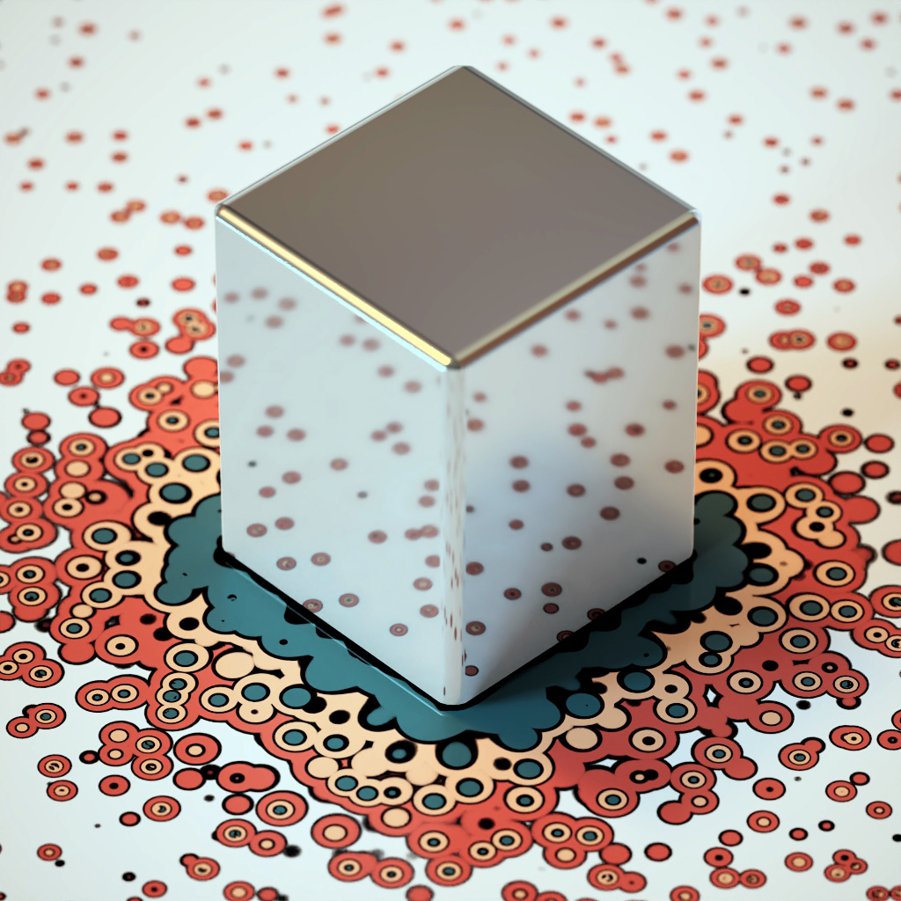 | 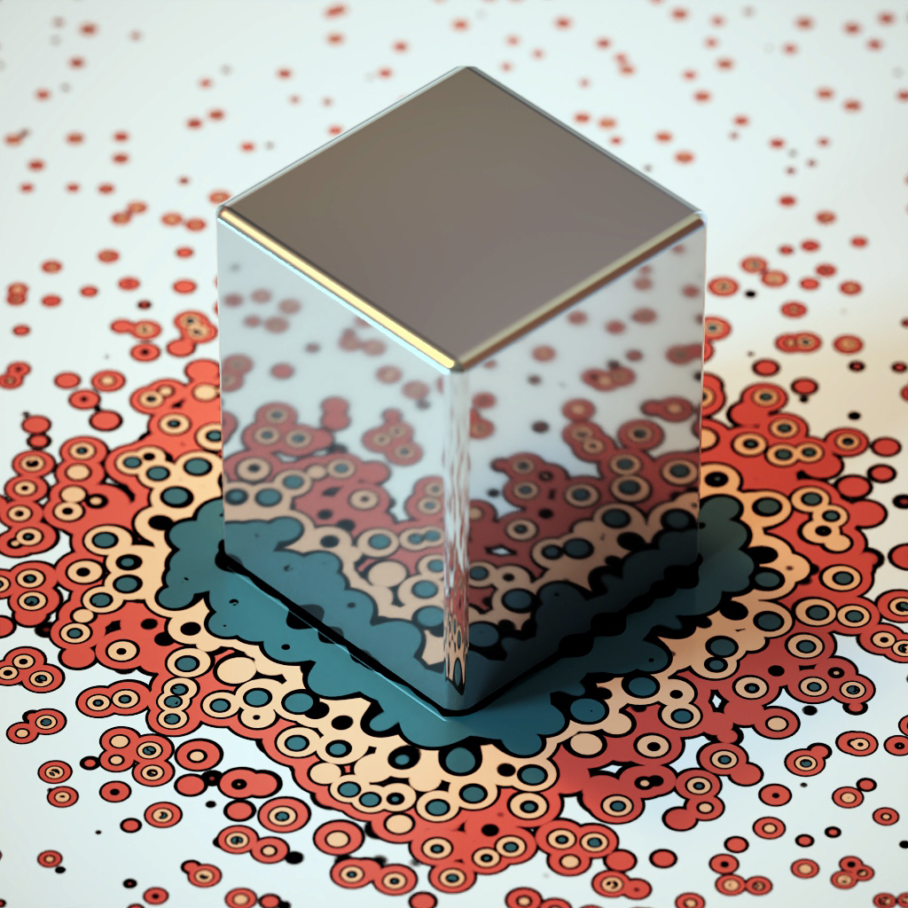 |
| 7.2.4 | 7.2.5 |
| 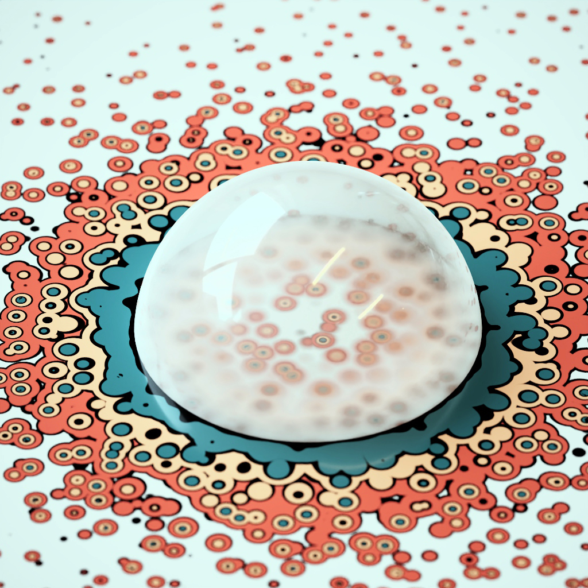 | 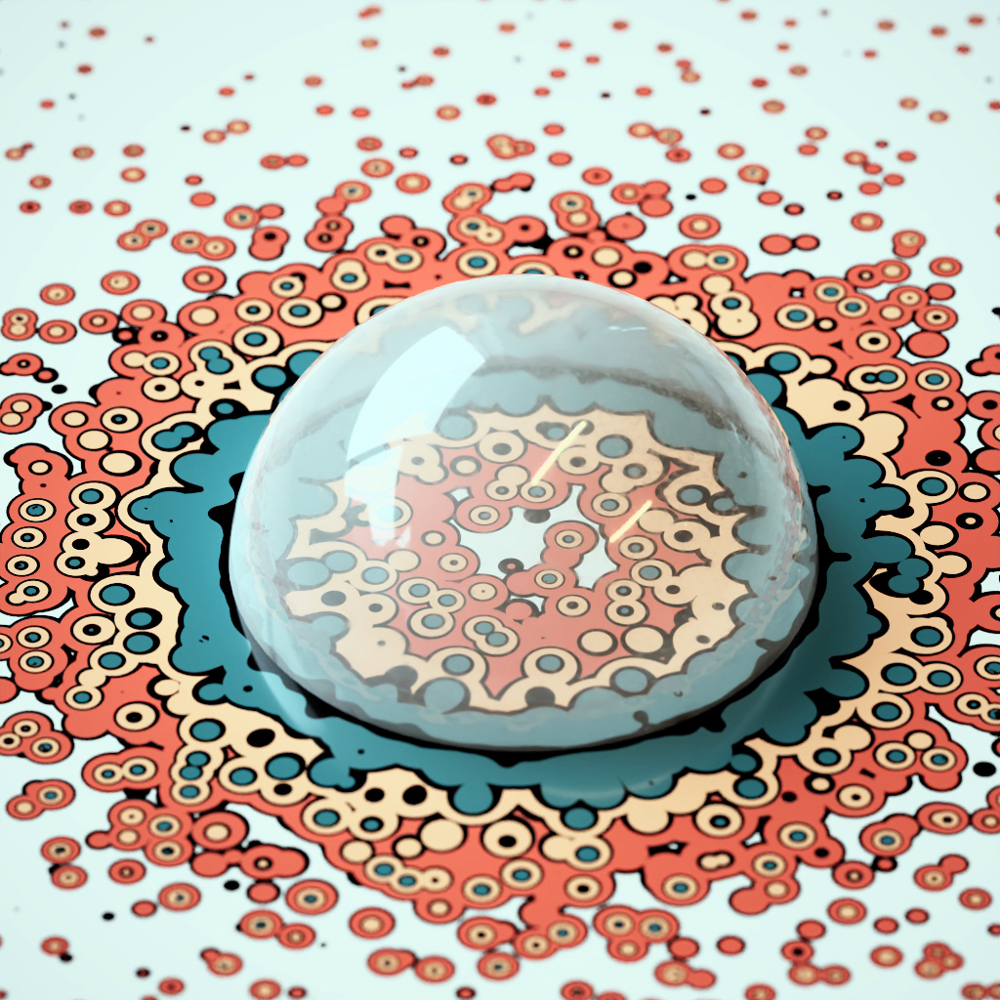 |
| 7.2.4 | 7.2.5 |
- Overlay imager: A new imager that allows you to decorate or tag your renders by printing text over the rendered images. Overlay text can use any of the system fonts (TrueType or PostScript), or custom fonts defined via the
OPENIMAGEIO_FONTSenvironment variable. You can include scene and system information, and render statistics, with pre-defined tokens, such as<frame_time>,<samples>, and<camera>. See the Overlay Imager documentation for the full list of tokens. (ARNOLD-14188)
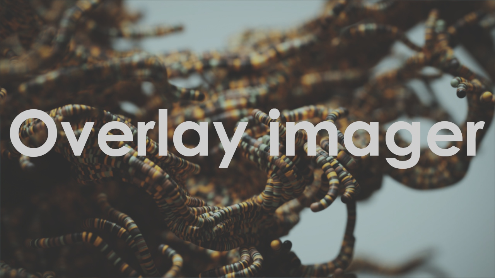
| 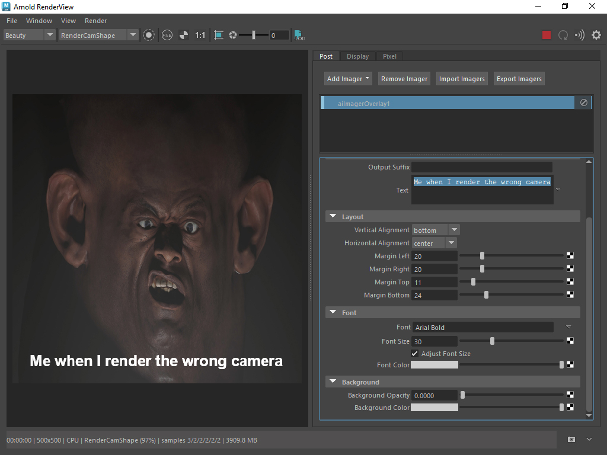 | 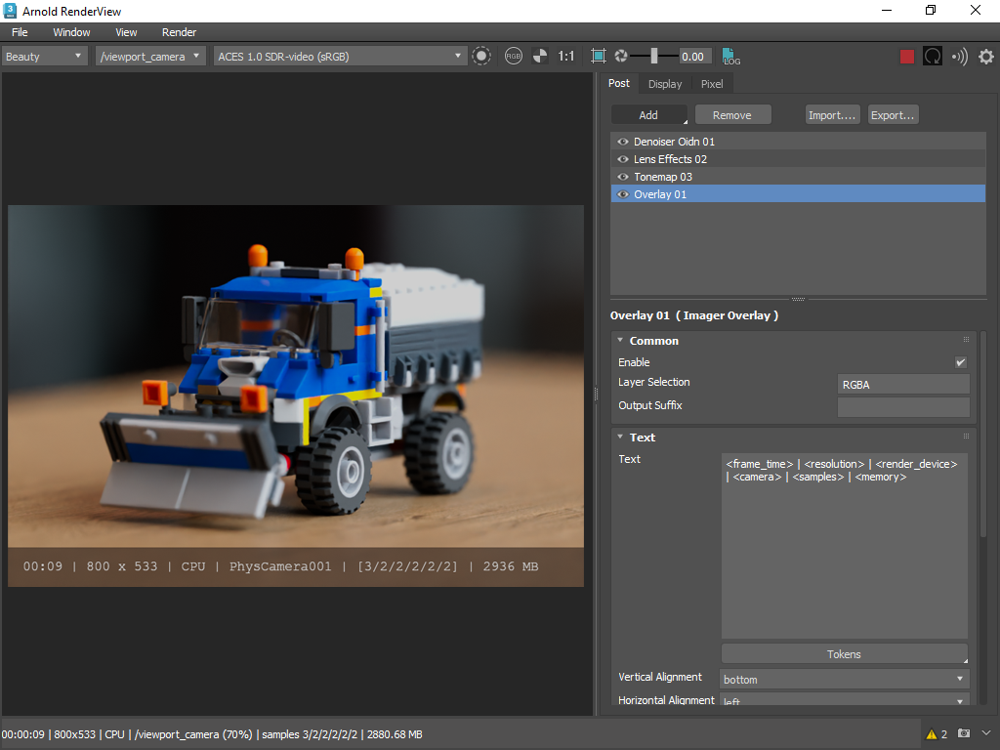 |
| Overlay imager used to add text to the rendered image | Using tokens with an overlay imager |
GPU denoising in Intel Open Image Denoise: The Intel denoiser was upgraded from version 1.4.1 to 2.1.0, which brings real-time denoising through NVIDIA and Intel GPU support. (ARNOLD-12547)
Toon light-group AOVs: The toon shader now outputs AOVs for direct lighting from lights that have a label in their
aovparameter. The toon light-group AOVs are named with the toonaov_prefixparameter. For example, if a light hasaov = "keylight"and a toon shader hasaov_prefix = "myprefix_", then the toon light-group AOV is named "myprefix_keylight". (ARNOLD-9602)Automatically create non-existent paths to tx file: Generating a .tx file (maketx, autotx, AiMakeTx) now works even if the paths to the output .tx file do not exist: Arnold now creates those paths. (ARNOLD-14703)
Faster overlapping volumes: Arnold renders a few percent faster when there are many overlapping volumes. (ARNOLD-14353)
Scene unit conversion for light intensity: Scene unit conversion is now supported for light intensity in nested procedurals. If a procedural contains a light and its scene units do not match the procedural units, the light intensity is scaled to match the procedural. Conversion is in place for Arnold ass file procedurals, but we do not yet support USD and arbitrary procedural formats. (ARNOLD-9205)
Scene unit conversion for volume density and emission: Scene unit conversion is now supported for volume density and emission in nested procedurals. If a procedural contains a volume and its scene units do not match the procedural units, volume density and emission are scaled to match the procedural. Conversion is in place for Arnold ass file procedurals, but we do not yet support USD and arbitrary procedural formats. (ARNOLD-9206)
Improved profiling: Procedural and volume intersection times are now listed separately, instead of being included with the parent BVH. Profiling has also been added in other areas, in particular multithreaded code where helper threads were not being accounted for. This should result in higher quality statistics. (ARNOLD-14443)
GPU: Better compatibility with CPU rendering: The following CPU features have been ported over to the GPU.
Multiple render sessions with GPU (ARNOLD-14145)
When rendering on GPU and using per-face displacement shaders, autobump will now match the displacement shader assigned to each face. Previously, autobump would use the first shader applied. (ARNOLD-12796)
Motion blur on the implicit sphere primitive. (ARNOLD-12955)
Skydome_light.shader parameter. (ARNOLD-13641)
The "polygons" edge type in the wireframe. (ARNOLD-12804)
OSL LPE writing via debug closures. (ARNOLD-13907)
Image shader "file" wrap mode. (ARNOLD-12578)
ID mode in utility shader. (ARNOLD-14159)
edgelength mode in utility shader. (ARNOLD-14122)
The GPU renderers texture filtering logic has been improved such that there is a closer match to the CPU renderer. (ARNOLD-12578)
A number of fixes have been made to the GPU renderer's color management logic such that there is a closer match to the CPU renderer. (ARNOLD-12382)
Updated Autodesk Network License Manager:: Autodesk Network License Manager (NLM) server version 11.19.4.1 is available and includes support for RHEL/Rocky Linux 9 operating systems. You can find the NLM installer in the license/installer folder, and from the Arnold License Manager. (ARNOLD-14429)
USD Enhancements
- USD for Maya export of custom Arnold nodes - USD for Maya (with Plug-in Configuration set to Arnold) now exports custom Arnold procedural nodes (such as Yeti) to USD as ArnoldProceduralCustom primitives. MTOA-1531
- USDZ files supported as file format: You can render usdz files with kick, and load them with the
usdprocedural. usd#1726. - Orthographic cameras in Hydra: Orthographic Cameras are now supported in the Hydra render delegate. usd#612.
- Pixel Aspect Ratio in Hydra: The Arnold Render Delegate now supports the pixelAspectRatio parameter in RenderSetting primitives usd#658
API changes
- Multiple render sessions on GPU: The GPU can now render multiple render sessions at the same time. (ARNOLD-14145)
- Font API: A new API
AiFontGetFamiliesandAiFontGetStylesreturns the list of available system fonts (e.g. "Arial", "Times New Roman") and font styles (e.g. "Regular", "Bold", "Italic").AiFontGetFilenamereturns the path of the file that defines a given font family and style. (ARNOLD-14395)
Incompatible Changes
- Minimum NVIDIA driver requirements for Arnold GPU: Arnold GPU requires 535.104 or higher drivers on Linux and 537.13 or higher on Windows.
- aiOptions.background parameter hidden The legacy
backgroundis no longer available in the Render Settings interface. MTOA-1610 - GPU Cache pre-population removed Arnold GPU no longer requires a GPU cache pre-population. MTOA-1568
Bug Fixes
MTOA-1454 - New shader assignment retains previous displacement shading
MTOA-1377 - AiSkyDomeLight shape node and connected node are not deleted when parent transform node is deleted
MTOA-1501 - Import Shaders breaks RGB to Float connections
MTOA-1060 - Imported shaders organized by classification in Hypershade
MTOA-1424 - TX Manager: UDIM token in texture path causes Python error when opening TX Manager
MTOA-1657 - TX Manager: cannot create tx files from target folders
MTOA-1632 - TX Manager: cannot create tx files from scene textures
MTOA-1565 - TX Manager: Python error preventing Tx Manager from listing textures
MTOA-1550 - RenderView: Camera List not updating on opening scene
MTOA-1513 - RenderView: Creating a new camera via Panels > Perspective > New results in incorrect camera name in camera selector, selecting cameras after causes crash.
MTOA-1543 - Lookdevx: Arnold does not render if a UV reader is connected to the Mtlx image node
MTOA-1584 - Remove Exporting Arnold Scene duplicated log messages from USD for Maya exports
MTOA-1531 - USD for Maya export does not export ArnoldProceduralCustom nodes
usd#1709 - Procedural failures if schemas are present
usd#1713 - Fix coding error "attempt to get string for GfVec4f"
usd#1732 - Force the color AOV to be interpreted as the Arnold beauty pass
usd#1735 - Fix usdskel geometry and motion blur interpolation outside the keyframe boundaries
usd#1524 - Fix material binding on instances under a SkelRoot
usd#1718 - Support primvars:arnold attributes in Arnold typed schemas
System Requirements
- Maya 2022, 2023, or 2024
- Windows 10 or later, with the Visual Studio 2019 redistributable.
- Linux with at least glibc 2.17 and libstdc++ 4.8.5 (gcc 4.8.5). This is equivalent to RHEL/CentOS 7.
- x86-64 CPUs need to support the SSE4.1 instruction set.
- macOS 10.13 or later, macOS 11 and later for Maya 2024
- Apple Mac models with M series chips:
- Natively supported by Arnold for Maya 2024
- Supported under Rosetta 2 mode for older versions of Maya
- GPU rendering works on Windows and Linux only and requires an NVIDIA GPU of the Ada, Ampere, Turing, Volta, Pascal, or Maxwell architecture. We recommend using the 535.104.05 or higher drivers on Linux and 537.13, or higher on Windows. See Arnold GPU for more information.
- Optix™ denoiser requires an NVidia GPU with CUDA™ Compute Capability 5.0 and above.